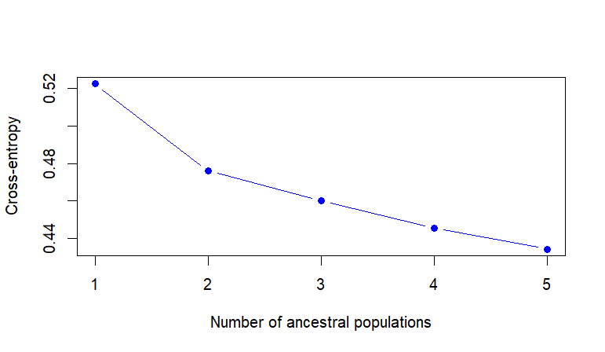
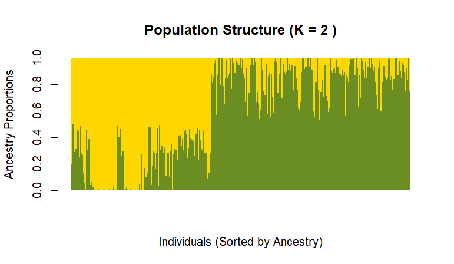

Admixture analysis estimates each individual's ancestry proportions under a specified number of ancestral clusters, (K). Here, LEA's sNMF algorithm is used to evaluate candidate values of (K) with cross-entropy and to extract a Q matrix for a selected run.
The lowest cross-entropy value is a useful model-selection criterion, but it should not be interpreted as definitive proof of the biological number of populations. Repeat runs and biological context matter.
Analysis workflow
VCF conversion → sNMF → cross-entropy → Q matrix
R code
Run candidate K values and extract a Q matrix
library(LEA)
vcf_file <- "5OK_AM17.vcf"
geno_file <- "5OK_AM17.geno"
stopifnot(file.exists(vcf_file))
# Convert VCF genotypes to LEA's .geno format
vcf2geno(vcf_file, output = geno_file)
# Fit multiple repetitions for candidate K values
project <- snmf(geno_file, K = 1:5, entropy = TRUE,
repetitions = 10, project = "new")
# Inspect cross-entropy to compare candidate K values
plot(project, col = "#2d5c42", pch = 19, type = "b",
xlab = "Number of ancestral clusters (K)",
ylab = "Cross-entropy")
# Select K=2 only if supported by cross-entropy and biology
selected_K <- 2
ce <- cross.entropy(project, K = selected_K)
best_run <- which.min(ce)
# Extract estimated ancestry proportions
qmatrix <- Q(project, K = selected_K, run = best_run)
q_df <- as.data.frame(qmatrix)
names(q_df) <- paste0("Ancestry_", seq_len(ncol(q_df)))
# Preserve individual IDs separately from the Q matrix.
# Confirm row order against the genotype samples before joining!
write.csv(q_df, "barley_Q_matrix.csv", row.names = FALSE)
# Ancestry bar plot from the selected LEA run
my_colors <- c("#2d5c42", "#c8a84b")
barchart(project, K = selected_K, run = best_run,
border = NA, space = 0, col = my_colors,
sort.by.Q = TRUE,
xlab = "Individuals (sorted by ancestry)",
ylab = "Ancestry proportions",
main = paste("Barley population structure (K =", selected_K, ")"))Model selection and ancestry results
Cross-entropy and the K = 2 ancestry bar plot


Interpretation
Reading the Q matrix responsibly
- Each row of the Q matrix represents one individual; each column is an estimated ancestry component.
- Values across a row should sum approximately to 1.
- Mixed proportions suggest assignment across inferred components under the fitted model; they are not direct estimates of pedigree percentages.
- For GWAS, align Q rows to genotype and phenotype identifiers explicitly. Never assume row order is unchanged after filtering.
Reproducibility notes
The LEA Q matrix does not automatically carry the VCF sample names as a regular data-frame column. Save the sample IDs in the same order as the rows used to build the .geno file, then validate that mapping before using ancestry covariates in GAPIT.